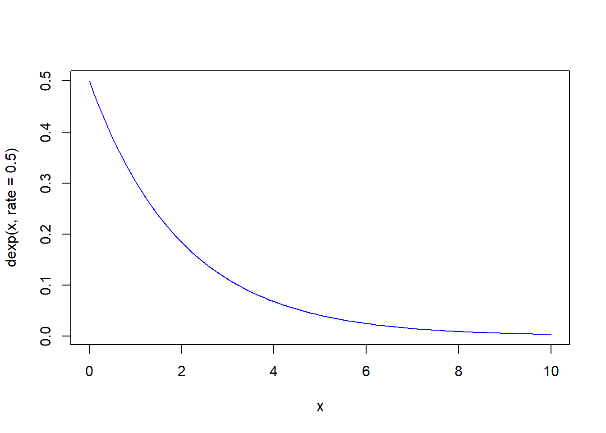
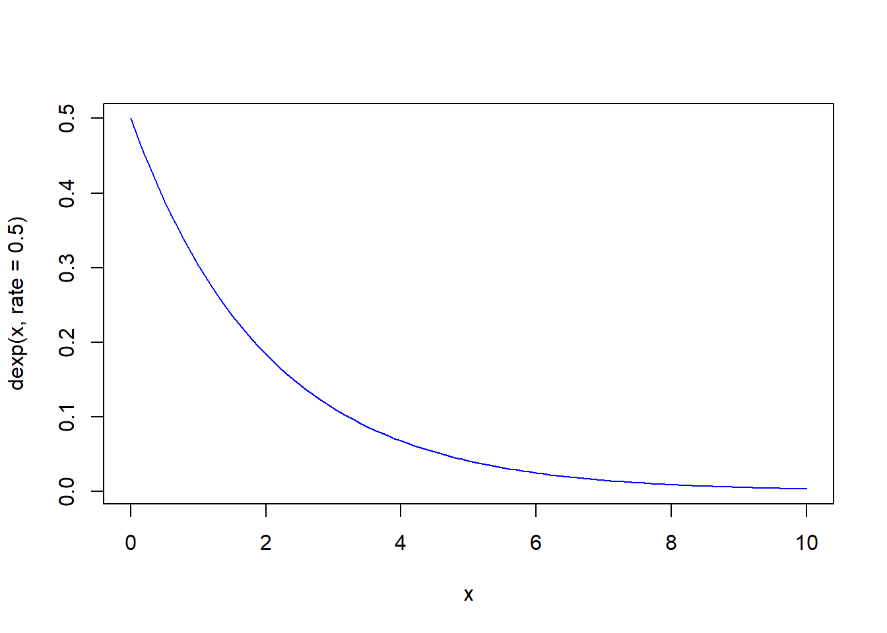
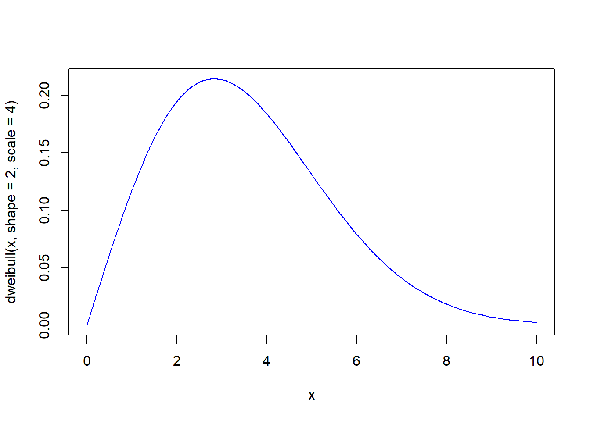
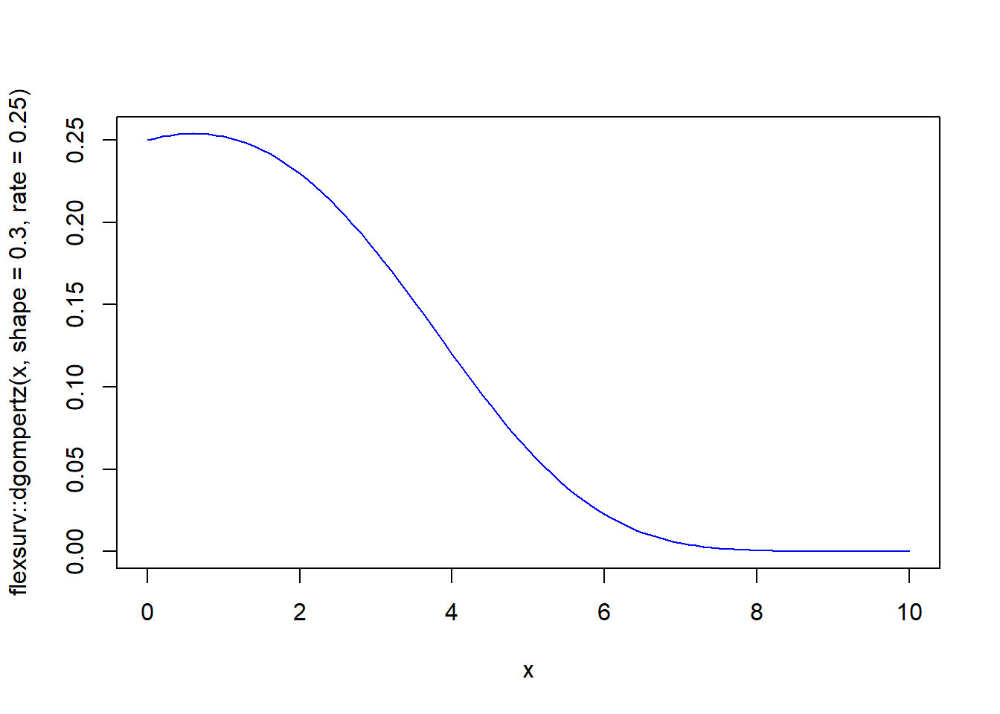
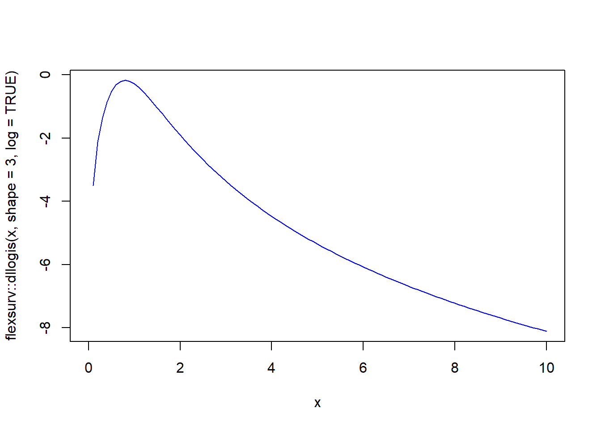
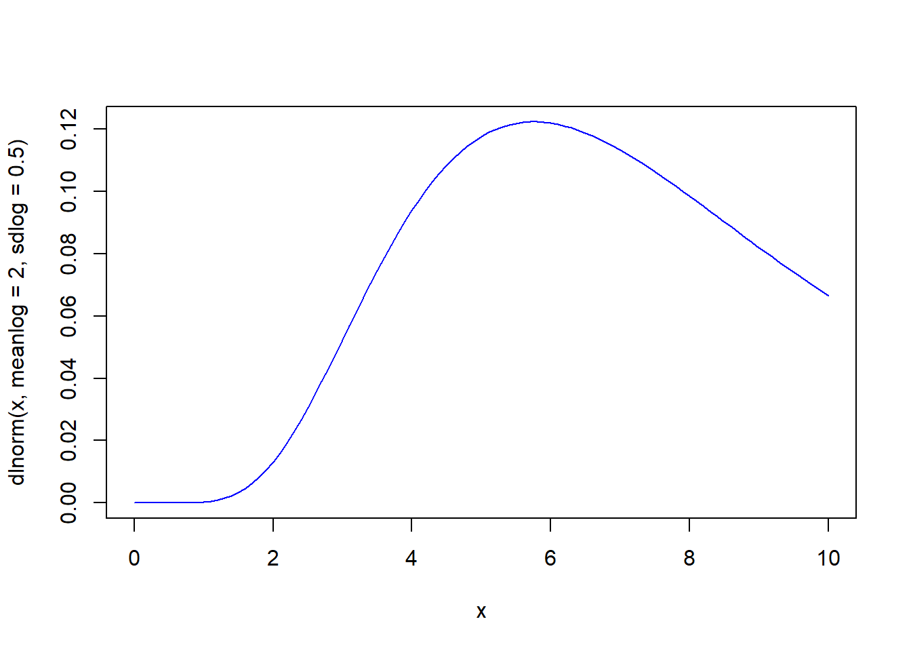
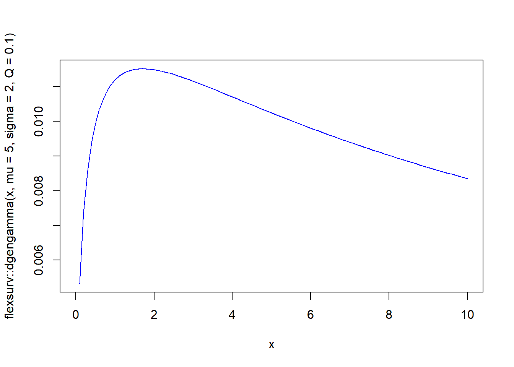

curve(dexp(x, rate = 0.5), from=0, to=10, col='blue')
There are a wide range of parametric models available, and each have their own characteristics which make them suitable for different data sets. Exponential, Weibull, Gompertz, log-logistic, log normal and Generalised Gamma parametric models should all be considered. These models, and methods to assess which of these models are suitable for particular data sets are described below. Further details on the properties of the individual parametric models that should be considered can be found in (Collett 2013), including diagrams of hazard, survivor and probability density functions which show the variety of shapes that the different models can take, depending upon their parameters. The hazard function is the event rate at time t conditional upon survival until time \(t\). The survivor function is the probability that the survival time is greater than or equal to time \(t\).
General equations for survival analysis are the following. The hazard is given by
\[ h(t) = \frac{f(t)}{S(t)} \]
The survival (or survivor) curve is
\[ S(t) = 1 - F(t) = \int_t^{\infty} f(t) \; \mbox{d}t \]
and the cumulative hazard is given by
\[ H(t) = \int h(t) \; \mbox{d}t \]
where \(f(t)\) is the density function, and \(F(t)\) is the cumulative distribution function.
We now introduce the separate functions for the most common distributions.
The hazard is constant i.e.
\[ h(t) = \lambda \]
and this then corresponds to
\[ S(t) = \exp \left(- \int \lambda \;\mbox{d}t \right) = e^{-\lambda t} \]
In R random samples from the exponential distribution can be obtained using rexp e.g. make 10 draws using rexp(n = 10, rate = 2). The other functions are pexp fore the cumulative distribution, qexp is the quantile function and density is dexp.
We can easily view a curve as follows.
curve(dexp(x, rate = 0.5), from=0, to=10, col='blue')
For the following we will also give an example density plot. Where there is a base R function available to do this we will use this. If not the we will use the equivalent functions from the flexsurv package.
Hazard
\[ h(t) = \lambda \gamma t^{\gamma-1} \]
Survival function
\[ S(t) = \exp \left( - \int_0^t \lambda \gamma u^{\gamma-1} \; \mbox{d}u \right) = \exp(- \lambda t^{\gamma}) \]
curve(dweibull(x, shape = 2, scale = 4), from=0, to=10, col='blue')
Hazard function
\[ h(t) = \lambda e^{\theta t} \]
Survival functions
\[ S(t) = \exp \left( \frac{\lambda}{\theta} \left(1 - e^{\theta t} \right) \right) \]
curve(flexsurv::dgompertz(x, shape = 0.3, rate = 0.25), from=0, to=10, col='blue')
Hazard function
\[ h(t) = \frac{e^{\theta} \kappa t^{\kappa - 1}}{1 + e^{\theta} t^{\kappa}} \]
Survival function
\[ S(t) = \left( 1 + e^{\theta} t^{\kappa} \right)^{-1} \]
curve(flexsurv::dllogis(x, shape = 3, log = TRUE), from=0, to=10, col='blue')
Survival function
\[ S(t) = 1 - \Phi\left( \frac{\log t - \mu}{\sigma} \right) \]
curve(dlnorm(x, meanlog = 2, sdlog = 0.5), from=0, to=10, col='blue')
Survival function
\[ S(t) = 1 - \Gamma_{\lambda t}^{\theta} (\rho) \]
where \(\Gamma_{\lambda t} (\rho)\) is the incomplete gamma function.
curve(flexsurv::dgengamma(x, mu = 5, sigma = 2, Q = 0.1), from=0, to=10, col='blue')